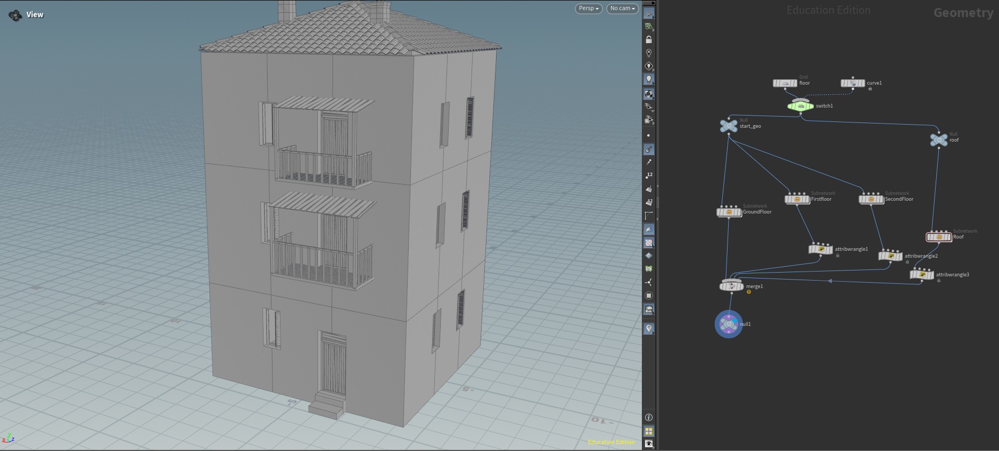
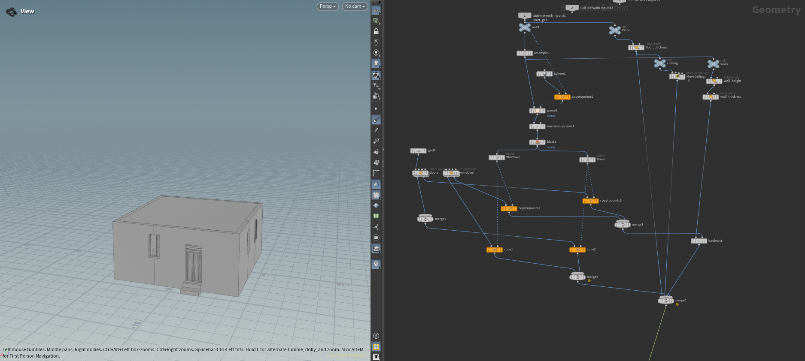
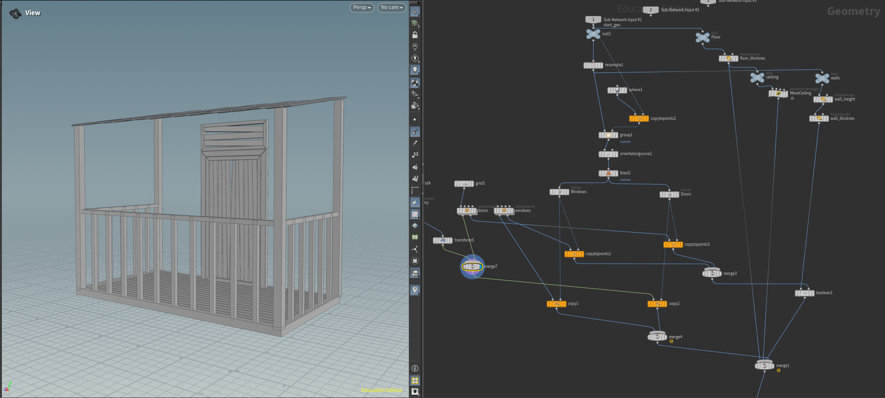
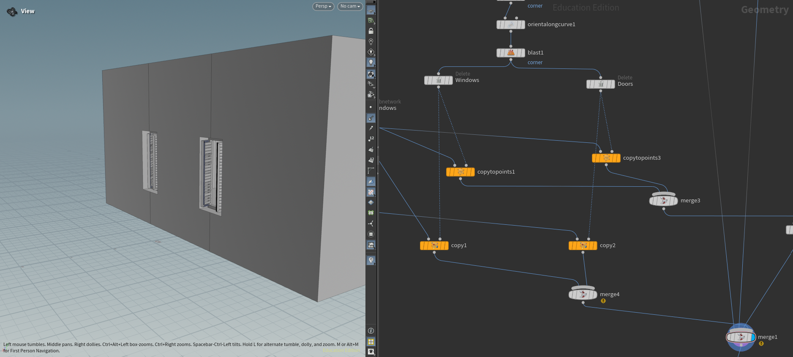

Overview
This project is a fully editable and extensible procedural building generator built in Houdini. Almost everything about the generated buildings can be changed and added to - including the overall shapes, proportions, structure and details - which makes it suitable for quickly populating large-scale scenes with varied, controllable architecture.
Instead of modelling buildings by hand one by one, the system lets you drive the result through parameters: adjust a few controls and the whole building updates, while new modules and rules can be plugged in to extend what it can produce.
Key features
- Fully editable - shapes, proportions and details can all be changed.
- Extensible - new modules and rules can be added to grow the system.
- Built for scale - designed to fill large scenes with varied buildings.
- Parameter-driven - the whole building updates from a set of controls.
Gallery




Software used
HHoudiniProcedural 3D / Tools
SoftwareHoudini
TypeProcedural Tool
FocusEditable · Extensible · Large-scale